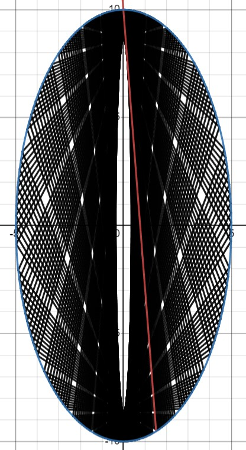

this problem involved having to calculate the reflections of a laser beam, and then figuring out when it would exit the ellipse at a given 'hole'. i did a bit
of researching and googling to find out how to a) find the intersection of a line with an ellipse and b) how to reflect a line across another a line, which is
really all you need to solve this problem. the function intersection() takes parameters m, b, x_o
where m and b are the gradient and the y-intercept of the line respectively, and x_o is the old "reflection point" so we know to discard it. it then uses reflect()
to calculate the gradient and y-intercept of the line reflected in the ellipse. my code spits out a series of lines you can plug into desmos for some neat visualizations.
since it only takes reflections to get the answer, a simple brute-force solution is sufficient. here's a link to my neat little desmos visualization, and an image of the graph is shown to the right here.
at the time of solving this, it was my hardest-rated problem solved, but it was comparatively pretty easy to the other problems, i felt. the calculations aren't too difficult and it's fun to figure out how to get the reflected lines. i guess it also helps that i really enjoy these geometry problems, they're very neat!
since it only takes reflections to get the answer, a simple brute-force solution is sufficient. here's a link to my neat little desmos visualization, and an image of the graph is shown to the right here.
at the time of solving this, it was my hardest-rated problem solved, but it was comparatively pretty easy to the other problems, i felt. the calculations aren't too difficult and it's fun to figure out how to get the reflected lines. i guess it also helps that i really enjoy these geometry problems, they're very neat!
